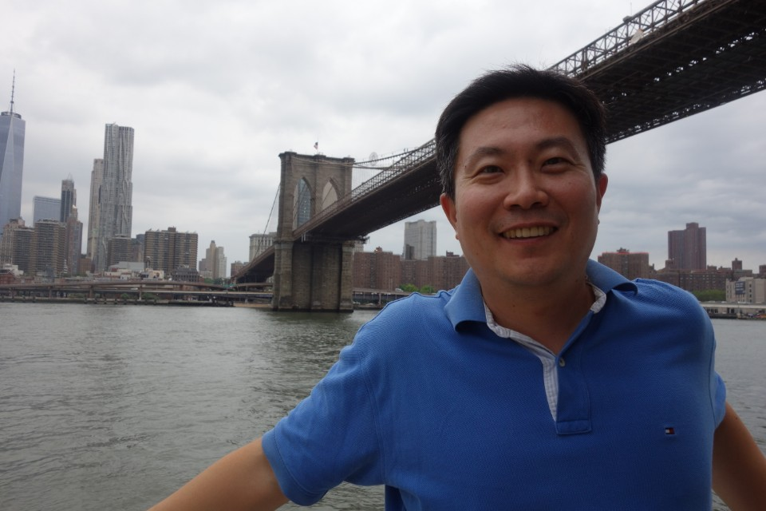

About Me

I'm a control systems engineer and getting ready to be a web developer in manufacturing, IT, energy & utility, and software development industries.
I worked as a control systems engineer for Hyundai Heavy Industries Co., Ltd. At the time, I participated in developing a ship automation system named ACONIS, and more of my work skills were on topics from implementation of multi-threaded applications in C/C++ and PLC programming for process control. In addition, I’ve been interested in the combination of legacy industrial control systems and IT technologies including Big Data, Cloud and IoT since I joined a smart ship project in order to provide total ship service solutions.
Executive Summary (LinkedIn)
- 17-year control systems software engineer for industrial automation and process control
- Development of multi-threaded ship automation applications in OOP language (C++)
- Delivery and maintenance of a ship automation system named ACONIS over 1,000 ships since 2003